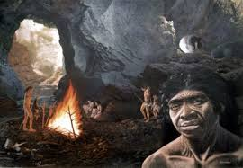

El México prehispánico o época prehispánica de México, puede ser definido como el tiempo o etapa histórica del país, durante la cual se desarrollaron culturas de una trascendencia importante para una parte de la estructura que fue y aun hoy es pilar de la formación como nación de lo que es la república mexicana.
Hace apenas 21.000 o 25.000 años, el actual territorio mexicano comenzó a poblarse de hombres y mujeres que procedieron de Asia, esto según la hipótesis del paso de estos por el estrecho de Bering y de ahí a toda américa.
Transcurrieron estos hombres y mujeres la llamada etapa lítica de México o prehistoria mexicana, siendo individuos organizados en grupos de cazadores recolectores, que vivían de lo que podían obtener atacando en grupo a presas de las cuales se beneficiaban, de su carne, piel y huesos; esto hasta que aproximadamente hace 5.000 años anteriores a nuestra era, se inició con el descubrimiento de la agricultura en la zona, una etapa protoagricola en Mesoamérica, lo que revolucionó totalmente la vida de los grupos de cazadores recolectores que abandonaron la vida nómada volviéndose gradualmente sedentarios. Se inicia una organización de estos individuos de forma tribal, hasta que finalmente evolucionó a una organización sociopolítica bien estructurada y definida, dando paso a la formación de las llamadas culturas prehispánicas o mesoamericanas.
Arqueolítico: este periodo, se estima tuvo una duración que va del 30,000 A.c. al 9500 A.c. el hombre en esta etapa de la historia de México, comenzaba a utilizar y fabricar herramientas rudimentarias pero muy útiles para su supervivencia; toda vez que eran utilizadas en la caza de grandes mamíferos de los cuales obtenían además de alimento vestido, procesando de forma rudimentaria la piel de animales para tal fin.
Cenolítico Inferior: del 9500 a. C. al 7000 a. C en este periodo, el hombre comenzó a elaborar instrumentos más sofisticados de los huesos de animales o de piedra con la finalidad de ser utilizados para la caza de grandes mamiferos, además de vivir cambios climáticos que dieron paso al holoceno y el fin de la glaciación, y la paulatina extinción de los grandes mamíferos, que merodeaban los valles lacustres de México.
Cenolítico Superior: inicia en el 7000 A.c. los grandes mamíferos ya se encontraban extintos casi al finalizar este periodo, como consecuencia de estos cambios el hombre americano buscó otras formas de subsistir, utilizando frutos y semillas aunque continuaba cazando, cada vez mas se dependía de los frutos que la tierra le proporcionaba empezando así una etapa preagricola.
Protoneolítico: del 5000 A.c. al 2500 A.c. en esta etapa, la agricultura comienza a tomar parte de la vida de lo que posteriormente se convertirían en las grandes culturas de la historia de México; auque de forma incipiente poco a poco se comenzó con la domesticación del maíz y otros vegetales que permitieron la vida sedentaria y el desarrollo de las culturas en México, además de comenzar a diferenciarse las dos grandes regiones culturales llamadas Mesoamérica y Aridoamérica.
